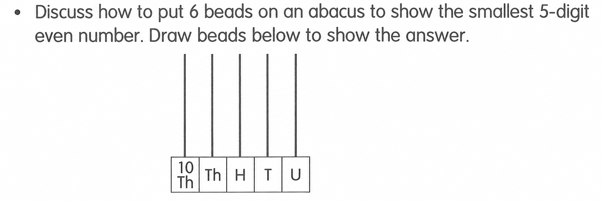

已掌握
| # | 中文意思 | 例句/提示 | 英文默写 | 已掌握 |
|---|---|---|---|---|
| noun 名词 | ||||
| 1 | 章节 | This is about animals. | ||
| 2 | 邮票 | I put a on the postcard. | ||
| 3 | 市场 | There is a near my home. | ||
| 4 | 银行 | My mum goes to the . | ||
| 5 | 礼物 | I got a . | ||
| 6 | 清洁工人 | The works every day. | ||
| 7 | 斑马 | The has black and white stripes. | ||
| 8 | 厨师 | The cooks dinner. | ||
| 9 | 心 | My beats fast. | ||
| 10 | 腰带 | He wears a black . | ||
| verb 动词 | ||||
| 11 | 讨厌 | I noisy places. | ||
| 12 | 庆祝 | We my birthday. | ||
| preposition 介词 | ||||
| 13 | 在……之后；在……后面 | The cat is the box. | ||
| noun phrase 名词短语 | ||||
| 14 | 警局 | We took the lost bag to the . | ||
| adjective 形容词 | ||||
| 15 | 不同的 | Our bags are colours. | ||
| adjective/adverb 形容词/副词 | ||||
| 16 | 早的；早地 | I get up . | ||
| pronoun 代词 | ||||
| 17 | 他们 | are my friends. | ||
| uncategorized 未分类 | ||||
| 18 | 累的 | I feel after the long walk. | ||
| 19 | 收到 | I a letter from my aunt every month. | ||
| 20 | 扔掉 | Please the empty packet in the bin. | ||
| # | 单词/词组 | 中文意思 | 例句/说明 | 已掌握 |
|---|---|---|---|---|
| adjective 形容词 | ||||
| 1 | wise | The wise man gave good advice. | ||
| noun 名词 | ||||
| 2 | beach | I want to go to the beach. | ||
| 3 | fish | I can see a fish in the water. | ||
| 4 | bunny | The bunny eats a carrot. | ||
| 5 | postman | The postman brings letters. | ||
| 6 | musical | We watched a musical at school. | ||
| 7 | shape | A circle is a shape. | ||
| 8 | costume | I wear a costume at the festival. | ||
| 9 | picnic | We have a picnic in the park. | ||
| 10 | lollies | The children bought some lollies. | ||
| 11 | cycling | I like cycling at weekends. | ||
| 12 | cinema | We watched a film at the cinema. | ||
| noun phrase 名词短语 | ||||
| 13 | high jump | He can do the high jump. | ||
| 14 | Test Week | Test Week is from 16th April to 20th April. | ||
| 15 | country park | I want to go to the country park. | ||
| 16 | a hamburger | How much is a hamburger? It's seventy dollars. | ||
| 17 | a cup of hot chocolate | I'd like a cup of hot chocolate. | ||
| 18 | a pot | Put some water into a pot. | ||
| verb 动词 | ||||
| 19 | chase | The dog may chase the ball. | ||
| 常见动词 Common Verbs | ||||
| 20 | play | I play football. | ||
| verb phrase 动词短语 | ||||
| 21 | play the violin | He wants to learn to play the violin. | ||
| 22 | look at shells | We look at shells on the beach. | ||
| 23 | watch fireworks | We watch fireworks in Tsim Sha Tsui. | ||
| 24 | eat chocolate eggs | We eat chocolate eggs at Easter. | ||
| 25 | play with lanterns | We play with lanterns at night. | ||
| 26 | cut the cake | We cut the cake and shared it. | ||
| adjective/noun 形容词/名词 | ||||
| 27 | round | The ball is round. | ||
| uncategorized 未分类 | ||||
| 28 | line | Write your name on the first line. | ||
| 29 | mid-year | Our mid-year test is in January. | ||
| 30 | campsite | We put up our tent at the campsite. | ||
| # | 中文意思 | 例句/提示 | 英文默写 | 已掌握 |
|---|---|---|---|---|
| time/date 时间日期 | ||||
| 1 | 三月 | is the third month. | ||
| 2 | 九月 | is the ninth month. | ||
| time unit 时间单位 | ||||
| 3 | 周 | A has 7 days. | ||
| directions 方向 | ||||
| 4 | 东 | The sun rises in the . | ||
| 5 | 西 | The sun sets in the . | ||
| numbers 数字 | ||||
| 6 | 6 | is 6. | ||
| 7 | 18 | is 18. | ||
| 8 | 19 | is 19. | ||
| 9 | 40 | is 40. | ||
| 10 | 70 | is 70. | ||
| solid shape 立体图形 | ||||
| 11 | 三棱柱 | A has triangular faces. | ||
| 12 | 六棱锥 | A has one hexagonal base and six triangular side faces. | ||
| 13 | 圆锥 | A has one curved face. | ||
| 14 | 面 | A cube has six . | ||
| plane shape 平面图形 | ||||
| 15 | 四边形 | A has four sides. | ||
| # | 单词/词组 | 中文意思 | 例句/说明 | 已掌握 |
|---|---|---|---|---|
| operations 运算 | ||||
| 1 | addition | Addition means putting numbers together. | ||
| 2 | total | Find the total number of apples. | ||
| 3 | borrowing | Borrowing helps when we subtract. | ||
| geometry 几何 | ||||
| 4 | dotted line | Draw a dotted line between the two points. | ||
| question word 题目词 | ||||
| 5 | calculate | Calculate the answer. | ||
| comparison 比较 | ||||
| 6 | more | 8 is more than 5. | ||
| 7 | most | Which group has the most? | ||
| 8 | lightest | The 1 kg bag is the lightest of the 1 kg, 2 kg and 3 kg bags. | ||
| time/date 时间日期 | ||||
| 9 | minute hand | At three o'clock, the minute hand points to 12. | ||
| 10 | small division | The minute hand moves one small division in one minute. | ||
| 11 | second hand | The second hand goes around the clock once in one minute. | ||
| position 位置 | ||||
| 12 | behind | The bag is behind the chair. | ||
| 13 | above | The clock is above the board. | ||
| 14 | arrow | The arrow points to the right. | ||
| operations calculation 运算 | ||||
| 15 | difference | The difference is the answer in subtraction. | ||
| 16 | multiplication | Multiplication can use times. | ||
| 17 | product | The product is the answer in multiplication. | ||
| 18 | divisor | The divisor divides the dividend. | ||
| 19 | remainder | The remainder is left after division. | ||
| 20 | column form | Write it in column form. | ||
| teacher math vocabulary 老师数学词汇 | ||||
| 21 | finish | Please finish the calculation. | ||
| currency money 货币 | ||||
| 22 | dollar | One dollar has 100 cents. | ||
| 23 | exchange | We exchange money at the counter. | ||
| 24 | expensive | This toy costs $50. It is more expensive than the $20 toy. | ||
| measurement 测量 | ||||
| 25 | centimetre | A centimetre is a small unit of length. | ||
| 26 | balance | We use a balance to compare the weights of two objects. | ||
| directions tool 方向工具 | ||||
| 27 | compass | A compass shows directions. | ||
| 句型结构 | ||||
| 28 | Angle ... is smaller than Angle ... | Angle A is smaller than Angle B. | ||
| 29 | Angle ... is the largest. | Angle A is the largest. | ||
| plane shape 平面图形 | ||||
| 30 | leg | A leg of a trapezium is a non-parallel side. | ||


